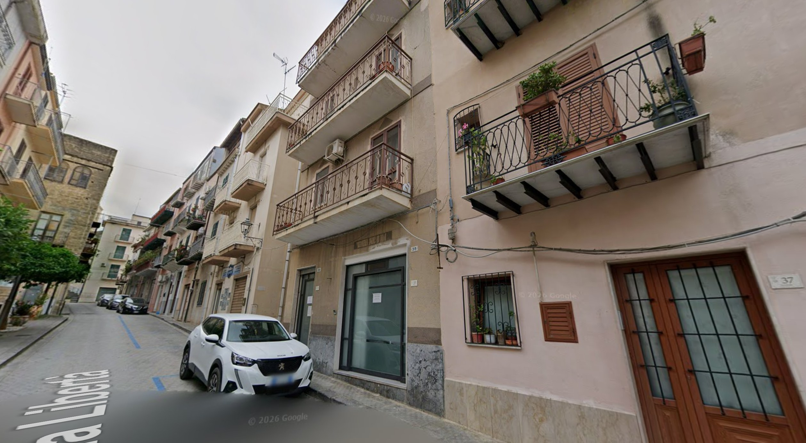
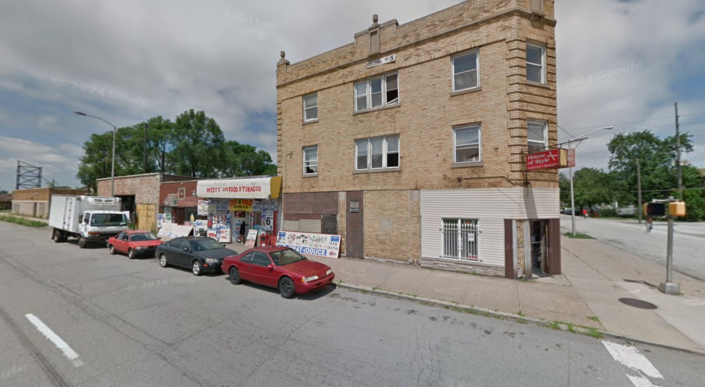
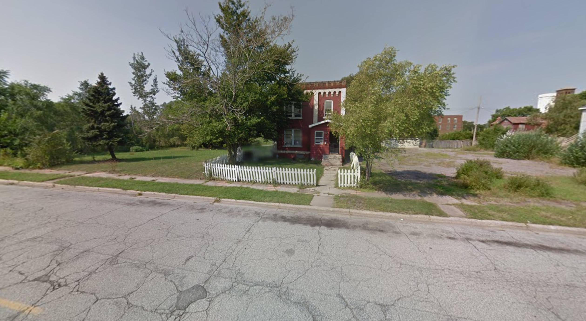
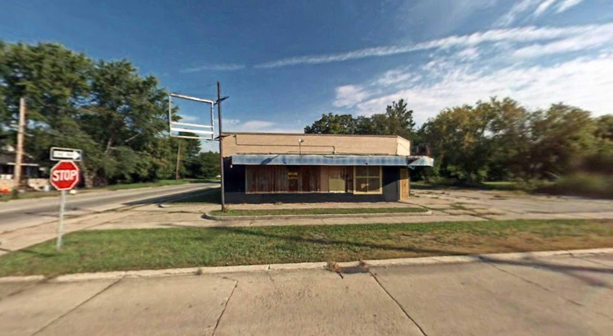
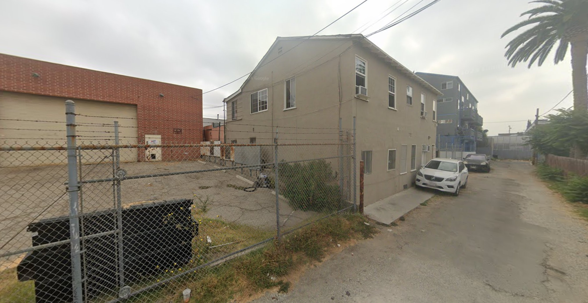
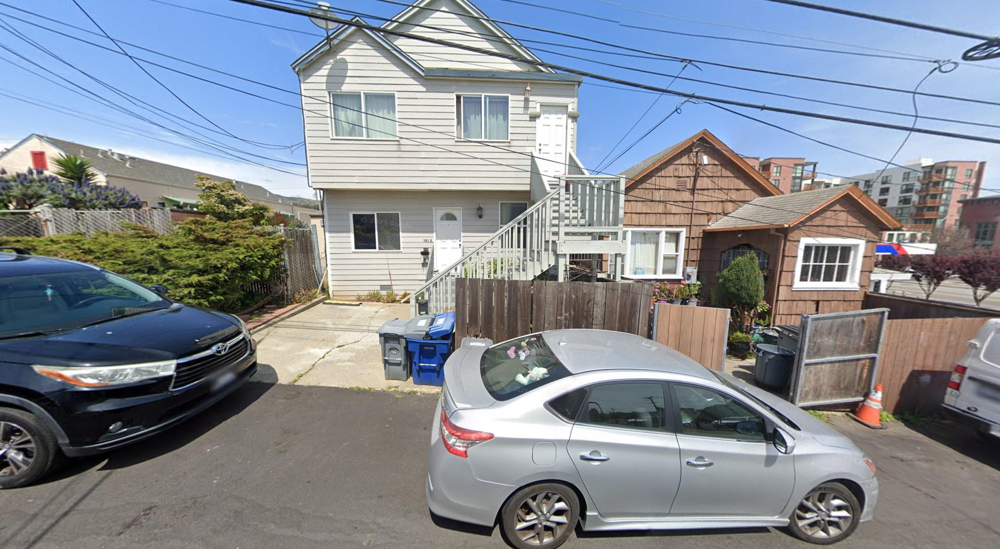
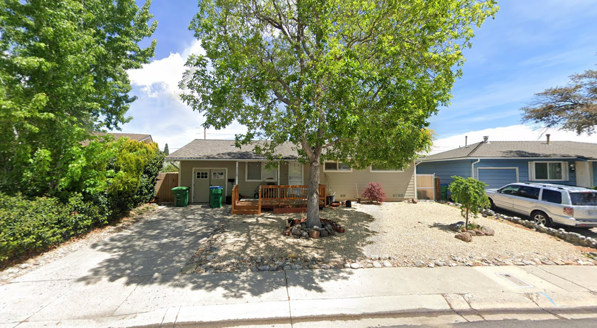
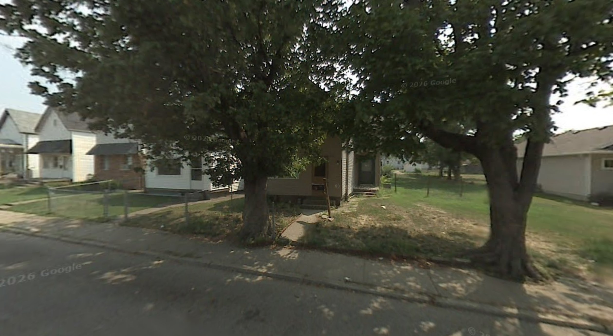

Every address here comes off a document — a draft card, a census sheet, an alien registration, a marriage act. Google's cameras have been photographing streets since 2007, and where a building has since been lost, that early imagery is sometimes the only picture of it that exists.
Set side by side, they say something the documents do not. The houses these families left are still standing. The houses they came to are gone. Salvatore walked away from a stone street in Lascari that looks today much as it did in 1908, and spent his life in a Michigan grocery store that has since been erased. The corner block the Muffoletto brothers lived above in Gary is still standing, but the shops beneath it are shut and nobody lives there now.
It is not really a coincidence. Lascari was built in stone by people with no money to rebuild, and emigration took away the pressure to try — the town was preserved partly because men like Salvatore left it. Gary and Saginaw were raised fast and in timber on the back of steel and automobiles, and when those industries went the houses had no value left to protect them. Poverty kept one; boom and collapse took the other.
The Muffoletto brothers make the point exactly. Campofelice di Roccella, the town they left, had stood on that coast for centuries. Gary was founded in 1906, by United States Steel, on empty dune land at the bottom of Lake Michigan. Salvatore and Antonio arrived in 1911, when the place was five years old — younger than either of them. A house on their block went up in 1914, three years after they got there, and is still standing; in 2026 it was on the market for $18,000. They left a town older than any record of their family for one that had not existed in their parents' lifetimes, and it is the new one that has not lasted.
A caution about these photographs. A Street View image proves what stands on a lot today, not what stood there when the family did — and checking build dates has already changed three of the six captions below. The Reno house dates from 1962 and cannot be the home Ramona kept for most of her twenty years in the city. The Evansville address has no house on it at all, and never did in any capture Google holds. The 600 W. 5th Avenue block went up in 1924, too late for one Muffoletto brother and about right for the other. Only 752 Adams Street is positively corroborated, by a neighbouring house dated 1914. The Saginaw store is confirmed demolished between 2014 and 2016, but whether it was already standing in 1940 is unknown. South San Francisco and Lascari have not been checked at all, so read those two as the place rather than necessarily the building.
Sicily — still there

Via Libertà 39, Lascari (Palermo) — in 1908 this street was Via Umberto, renamed after Italy voted out the monarchy in 1946. The marriage act of 25 July 1908 puts Carmela Covelli at no. 35 and Salvatore Barnisi at no. 38, on opposite sides and about fifty metres apart. He was not a visitor to Lascari; he was lodging as her neighbour. Why a twenty-year-old farm labourer from Pachino, 250 km away, was living on this street at all is still unexplained. Street View, September 2025
America — the buildings are going

600 W. 5th Avenue, Gary, Indiana — now signed as US-20, the highway having been laid along 5th Avenue. Not a house but a three-storey brick corner block with shops beneath: in this photograph West 5th Food & Tobacco and a place called House of Style are trading, and there are cars at the kerb. The building dates from 1924, which is too late for Salvatore Muffoletto, who was at this address between about 1917 and 1920 — he lived in whatever stood here before. It fits his brother Antonio, who came back from Sicily for good in September 1922 and gave 600 W. 5th as his address before moving to Adams Street. Both were shoemakers out of Campofelice di Roccella. The shops are shut now and the building is empty. Street View, August 2011

752 Adams Street, Gary, Indiana — Antonio Muffoletto's later address, and the better ending of the two. The house next door at 756 was built in 1914, which dates this block to Gary's first build-out and makes it likely that this is the building Antonio actually knew rather than a replacement. That 1914 house next door was listed for sale in 2026 at $18,000. Street View, August 2011

The Barnese grocery — 1300 Kirk Street at N. 6th, Saginaw, Michigan — Salvatore ‘Sam’ Barnese owned this store by 1940. His 1942 draft card gives the address as 1000 N. 6th Street, which is the same building seen from the side: a corner store, fronting Kirk, with the family above. It is not there any more. Google Earth's historical imagery shows it standing in 2014 and gone by 2016, so this photograph is of a building that survived another six years after the camera passed and then went. What the demolition date cannot settle is the other end — whether this was already the building in 1940, when Sam owned the store. For that the Sanborn fire insurance map of this corner is the authority. Street View, September 2008

2736 W. Temple Street, Los Angeles — Roman ‘Babe’ Sanchez was born here at 6:30 in the evening on 25 February 1926. His birth certificate gives the address as 2736½, and the half is the point: this is an apartment building, and the Sanchezes had one unit in it. It was built in 1909, seventeen years before he was born — which makes this, so far, the only American address on this page where the building is both still standing and demonstrably old enough to be the right one. Seen here from the alley behind. Street View, July 2022

308 2nd Lane, South San Francisco, California — where the Alien Registration Act found Roman Sanchez on 19 September 1940: fifty-eight years old, living alone, self-employed painting signs, and a citizen of nowhere. Street View, April 2025

1120 Akard Drive, Reno, Nevada — the address in Ramona Guzman Sanchez's obituary: “Ramona Sanchez of 1120 Akard St. died Wednesday in a local hospital.” She had been in Reno twenty years by then and owned a restaurant. This house was built in 1962 and she died in 1966, so she lived in it four years at most — the Reno of her first sixteen years is somewhere else, and unrecorded. Her obituary and the street sign also disagree: Akard St. in 1966, Akard Dr. now. Street View, May 2025

1021 N. 4th Avenue, Evansville, Indiana — Jack ‘Duke’ Bell's address before California. The house is not in this picture. The address is the open grass beside the small house at centre; whatever stood there had gone before Google first drove down this street, and it appears in no capture at any date. August 2007 is the earliest Street View ever reaches, and it was already too late. What survives is the street itself — the neighbours, the trees, the sidewalk he would have walked. Street View, August 2007
Narrowed, but not fixed
Electric Avenue, San Bernardino — where Roman Sanchez was living on 12 April 1930, with Ramona and their four eldest children. He owned the house, valued at $4,000, and gave his trade as house painter.
The census gives no house number. This was San Bernardino Township, unincorporated — the column is headed “house number (in cities or towns)” and there was neither. The enumerator, William F. Cushing, recorded street names and sequential dwelling numbers instead, walking a single route from 2 to 28 April that ran from the Del Rosa foothills up to the Arrowhead Springs Hotel. The Sanchez family were his 56th dwelling; the only numbered house on the street, four dwellings earlier at no. 52, was Judson Shaw's at 3950.
Working forward from 3950, the surviving candidates are:
3986 Electric Ave — built 1926. Stood in 1930. Closest to where the dwelling count lands.
4004 Electric Ave N — built 1927. Stood in 1930, though the ZIP differs from 3986, so it may be a separate stretch of the street.
3990 Electric Ave N — built 1932. Ruled out; it was open ground when the census was taken.
The arithmetic does not quite close: five dwellings are needed between 3950 and Roman's, and only three pre-1930 houses are known in that range — which may mean Cushing was counting both sides of the street. The deed would settle it. He owned the property, so a transfer is recorded in the San Bernardino County grantor/grantee index, and it would carry the thing this page most lacks: the date he stopped owning it. In April 1930 he had a house; by January 1937 he was arrested at Pomona for non-support, and by 1940 he was in a rented room in South San Francisco. Nothing documents the seven years in between.
No photograph exists
Three addresses on these pages were lost before any camera car came past.
620 N. 5th Street, Saginaw, Michigan — the Barnese family home. A house built in 2003 now stands on or beside the lot, and that settles the question: Street View did not begin until 2007, so Google never photographed what was there before. No picture of this house exists to be found. With the store on Kirk Street demolished between 2014 and 2016, nothing Sam Barnese lived in or worked in at Saginaw is still standing — the whole of his forty years in that city survives as one Street View frame taken by accident in 2008. 120 N. Bixel Street, Los Angeles — where John Claude Sanchez was born at 6:20 p.m. on 12 October 1920, nine months after his parents married. An apartment block of 1993 occupies the site now. 1230 10th Avenue, San Diego, California — James Sanchez after 1942. Rebuilt. 377 S. Clark Street, Chicago, Illinois — where Alessandro Macaluso was living in 1910, in the Loop. That block has been torn down and rebuilt more than once; the building he knew was gone long before 2007.
For these the next resort is the Sanborn fire insurance maps at the Library of Congress, which record individual building footprints, materials and use from the 1880s to the 1950s, and cover all three cities. They will not give you a photograph, but they will tell you the shape of the building, how many storeys it had, and whether the ground floor was a shop.